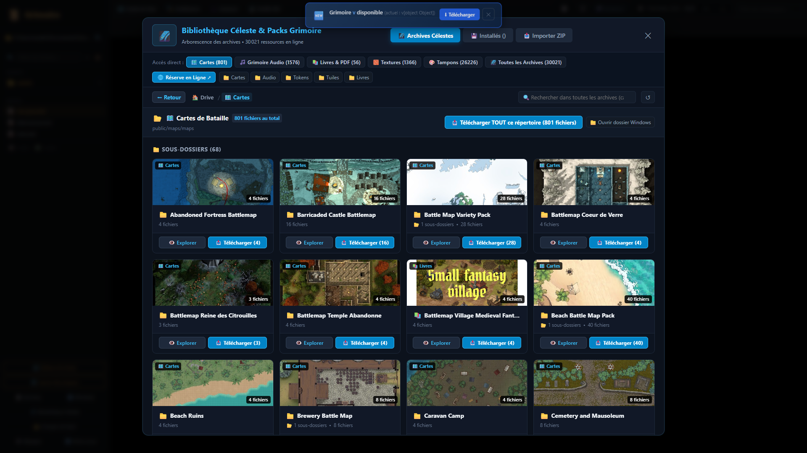

La Bibliothèque Céleste & Gestionnaire d'Addons
Enrichissez votre Grimoire sans effort. Accédez à un catalogue en ligne d'extensions créées pour vos parties de jeu de rôle : packs de cartes tactiques en 4K, bestiaires complets avec caractéristiques et attaques, règles de jeux officiels et sagas prêtes à jouer.
🌌 Visite de la Bibliothèque Céleste
Cliquez sur les numéros dorés pour découvrir le fonctionnement du store d'addons.

Archives Célestes (+30 000 Ressources)
Accédez à une immense collection de ressources communautaires gratuites et indexées, prêtes pour vos campagnes de jeu de rôle sans quitter Grimoire.
Pills de Catégories & Barre de Recherche
Basculez d'un clic entre Maps, Tokens, Audio, Notes et Templates, ou cherchez un mot-clé précis pour isoler la ressource voulue.
Arborescence & Dossiers Thématiques
Naviguez dans les répertoires classés par environnement (Donjons, Forêts, Villes, Sci-Fi, Fantastique) pour parcourir des séries d'assets cohérentes visuellement.
Aperçus Visuels & Informations
Chaque carte ou token affiche un aperçu miniature haute fidélité, le nom de l'auteur, les dimensions de grille recommandées et le format de fichier.
Téléchargement & Intégration Immédiate
Cliquez sur Télécharger : le fichier est rapatrié en local dans votre coffre de campagne et apparaît aussitôt dans votre sélecteur de cartes VTT ou votre gestionnaire d'assets.
Testez le Gestionnaire d'Addons
Pack Crypte des Morts-Vivants
12 cartes de catacombes texturées avec éclairage et grilles pré-configurées.
Bestiaire Fantastique V2
Plus de 250 créatures avec stats blocs Markdown, sorts et actions de combat.
Module Warhammer Fantasy
Règles de carrières, tables de blessures critiques et mutations du Chaos.